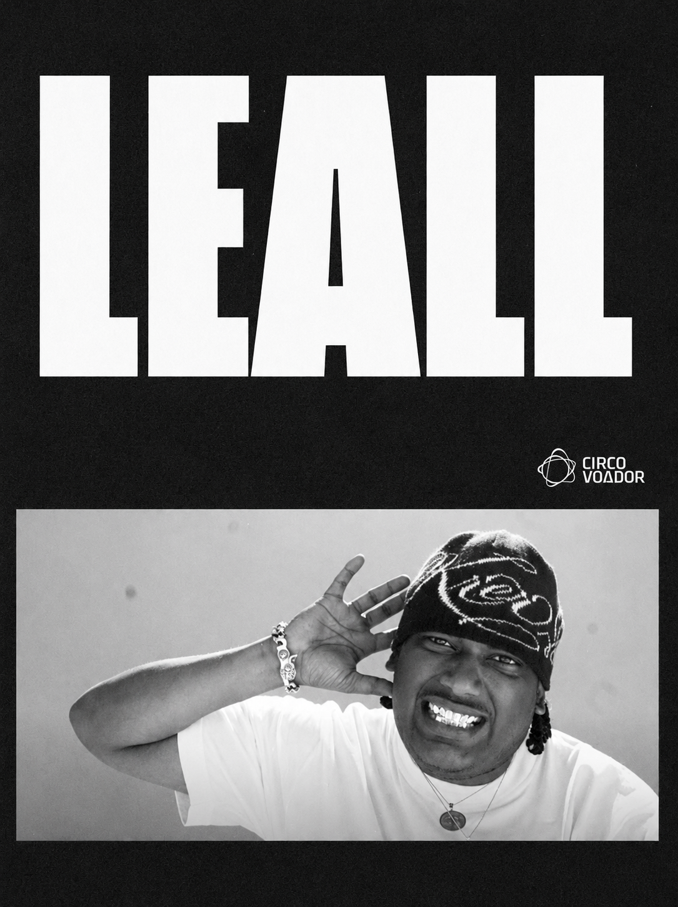

Leall
LEALL (nome artístico de Arthur de Jesus Leal) é um dos nomes
mais influentes do rap, drill e grime brasileiro atual.
Nascido em Marechal Hermes, na Zona Norte do Rio de Janeiro,
o rapper destaca-se pelas suas composições cruas e poéticas
que retratam o quotidiano, a violência e as vivências da
juventude negra periférica.
Informações Principais
Origem: Marechal Hermes, Rio de Janeiro.
Editora Atual: Integra o coletivo e selo Rock Danger.
Estilo Musical: Fortemente ligado ao UK grime, drill
e rap underground, misturando beats pesados com crónicas
sociais detalhadas.
Discografia e Grandes Êxitos
Álbuns de Estúdio: Estreou com o aclamado
Esculpido a Machado (2021) e consolidou a sua posição com
Eu Ainda Tenho Coração (2023).
EP de Destaque: Lançou recentemente o projeto
Você Precisa do Álibi (2025).
Músicas Mais Conhecidas: Faixas como "Ai Calica",
"Medo de Quase Nada", "Cachorrada" e "Louvre" acumulam
dezenas de milhões de reproduções nas plataformas digitais.
